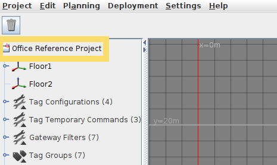
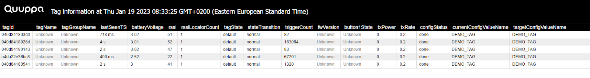
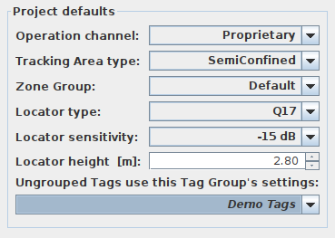

QT3-1 Tag quick start guide
The QT3-1 Tag is the first Quuppa v3 Tag, designed for long-term asset tracking in demanding environments. It combines an IP68 and IK06 heavy-duty enclosure with a battery life of up to 10 years. The Tag requires Quuppa software release 8.0 or newer.
You can configure and claim ownership of QT3-1 Tags using one of two alternative workflows:
- Option 1: Configure Tags and claim ownership using the QPE API
Provision the Tag using the default Tag settings, claim ownership using the QPE API, and verify the configuration in the QPE web console.
- Option 2: Configure Tags and claim ownership using QSP
Configure Tags and claim ownership using a Focusing Locator and the Tag autoconfiguration tool in Quuppa Site Planner (QSP), and verify the configuration in QSP.
Use the workflow that is appropriate for your deployment.
Option 1: Configure Tags and claim ownership using the QPE API
1.1 Provisioning
You can provision the QT3-1 Tag using the auto-configuration feature in the Quuppa system. In Quuppa Site Planner (QSP), the Project defaults setting Ungrouped Tags use this Tag Group's settings: applies a default configuration profile, for example Asset Tags, to any new or unassigned Tag. This allows a Tag to function locally within Locator coverage, but it does not claim ownership of the Tag in the Quuppa Customer Portal (QCP).
To provision a QT3-1 Tag using default settings:
- Open your project in QSP.
- Select the project file in the object tree.

- In the Project defaults panel on the right, select a
default tag group under Ungrouped Tags use this Tag Group's
settings:, for example, Asset Tags.

- Submit the project in QSP and run Do File Sync in the QPE web console.
- Remove a QT3-1 Tag from its packaging.
- Press the Tag button within the coverage area of your Quuppa system to activate the Tag. The QPE automatically configures the Tag using the selected default configuration profile.
To claim ownership, assign the Tag to a Tag Group using the QPE API.
1.2 Claim Tag ownership using the QPE API
Explicitly assigning a Tag to a Tag Group triggers an auto-association request from the QPE to the Quuppa Customer Portal (QCP). The request associates Tag ownership with the customer that owns the Project Key.
Use the setTagGroup API to assign Tags to a Tag Group. Specify the Tag IDs with the tag parameter and the target Tag Group with the targetGroup parameter.
1.3 Assign specific Tags to a Tag Group
Specify the Tag IDs and the target Tag Group in the setTagGroup request.
For example:
http://localhost:8080/qpe/setTagGroup?tag=a4da22aabb00,a4da22aabb01,a4da22aabb02,a4da22aabb03&targetGroup=Asset%20TagsExample response:
{
"code": 0,
"command": "http://localhost:8080/qpe/setTagGroup?tag=a4da22aabb00,a4da22aabb01,a4da22aabb02,a4da22aabb03&targetGroup=Asset%20Tags",
"message": "4 Tags moved to Group Asset Tags",
"responseTS": 1788937784376,
"status": "Ok",
"version": "1.0"
}1.4 Assign all unassigned Tags to a Tag Group
Use the tag=ungrouped parameter to assign all unassigned tags, i.e., Tags that are not yet assigned to a Tag Group, to the specified target Tag Group.
For example:
http://localhost:8080/qpe/setTagGroup?tag=ungrouped&targetGroup=Asset%20TagsExample response:
{
"code": 0,
"command": "http://localhost:8080/qpe/setTagGroup?tag=ungrouped&targetGroup=Asset%20Tags",
"message": "23 Tags moved to Group Asset Tags",
"responseTS": 1788938649311,
"status": "Ok",
"version": "1.0"
}After you have assigned the Tags to the intended Tag Group, verify that the correct configuration profile has been applied.
1.5 Verify Tag configuration
currentConfigValueName field. The displayed value must match
the configuration profile associated with the selected Tag Group.
1.6 Reconfigure Tags
To reconfigure an active QT3-1 Tag, assign the Tag to a different Tag Group that has the required configuration profile set:
- Use the
setTagGroupAPI to assign a Tag to a Tag Group. - Verify the updated configuration profile in the
currentConfigValueNamefield on the Tag Details page in the QPE web console.
Option 2: Configure Tags and claim ownership using QSP
Use Focusing Locator and the Tag autoconfiguration tool in Quuppa Site Planner (QSP) to configure and claim ownership of QT3-1.
- Open your project in QSP. The project file must be associated with a valid Project Key.
- Make sure that a Focusing Locator is connected to QSP.
- In the object tree, under Tag Groups, create the required Tag Group if it does not already exist.
- Open the Tag configurator tool and verify that the Focusing Locator connects successfully. Then open the Tag autoconfiguration tool.
- Select the intended Tag Group and start the autoconfiguration.
- Press the button on the QT3-1 Tag to activate it, and bring the Tag close to the
Focusing Locator. QSP configures the Tag and sends an auto-association request
to the Quuppa Customer Portal (QCP). The request associates Tag ownership with
the customer that owns the Project Key. Repeat this step for each Tag you want
to claim. After activating a Tag, verify its configuration by checking
Config status.

- Save and submit the project to QCP to store the Tag IDs in the intended Tag Group in the project file.
2.1 Reconfiguring Tags
- To reconfigure an active QT3-1 Tag, select the Tag, choose
Selection and Set tag group.
Choose a Tag Group that has the required configuration profile.

- Verify the updated configuration profile by checking the Config
status field.

For additional support, please contact Quuppa Support at support@quuppa.com.
Provisioning
The easiest way to provision your new QT3-1 Tag is to use the Quuppa system feature called auto-configuration. For using the auto-configuration feature:
- Open a project in the QSP.
- In the object tree on the left, select the project file.
- In the Project defaults section in the panel on the right,
select a tag group that you want to use as the default for all new (ungrouped)
tags. The tag group you select should have some target configuration - if you
don't know what type of tag configuration you need, suggestion is to use
Asset Tags.
- Submit the project in QSP and run Do File Sync in the QPE web console.
- Remove a QT3-1 Tag from its packaging.
- Activate the QT3-1 Tag by pressing the Tag's button within the coverage area of your Quuppa system.
- The QPE will then automatically configure the Tag based on its selected Tag Group.
- You can verify the tag has been configured by looking at the
'currentConfigValueName' field in the QPE web console Tag
Details page. The 'currentConfigValueName' should match with the
configuration in the tag group you selected.Note:'currentConfigValueName' is hidden by default in the Tag Details page. You can make it visible clicking Hide/show fields button at the bottom of the page and then selecting to show 'currentConfigValueName' field.
Re-configuration
The QT3-1 Tag can be re-configured by following steps similar to provisioning:
- In QSP project settings, select a (different) tag group you want to use as the
default for all new (ungrouped) tags.

- Submit the project in QSP and run Do File Sync in the QPE web console.
- You can verify the tag has been re-configured by looking at the 'currentConfigValueName' field in the QPE web console Tag Details page.
- In case the configuration of your QT3-1 Tag is not automatically updated in the table, press the button of the tag to re-activate.
- Your new QT3-1 Tag is now re-configured with the new configuration.
If you have any further questions or require additional support, please contact Quuppa Support at support@quuppa.com.